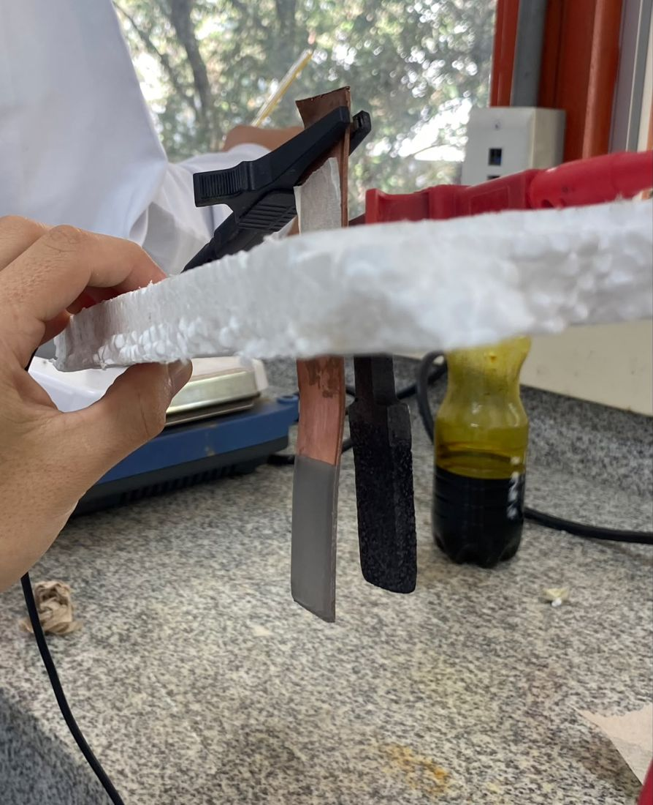
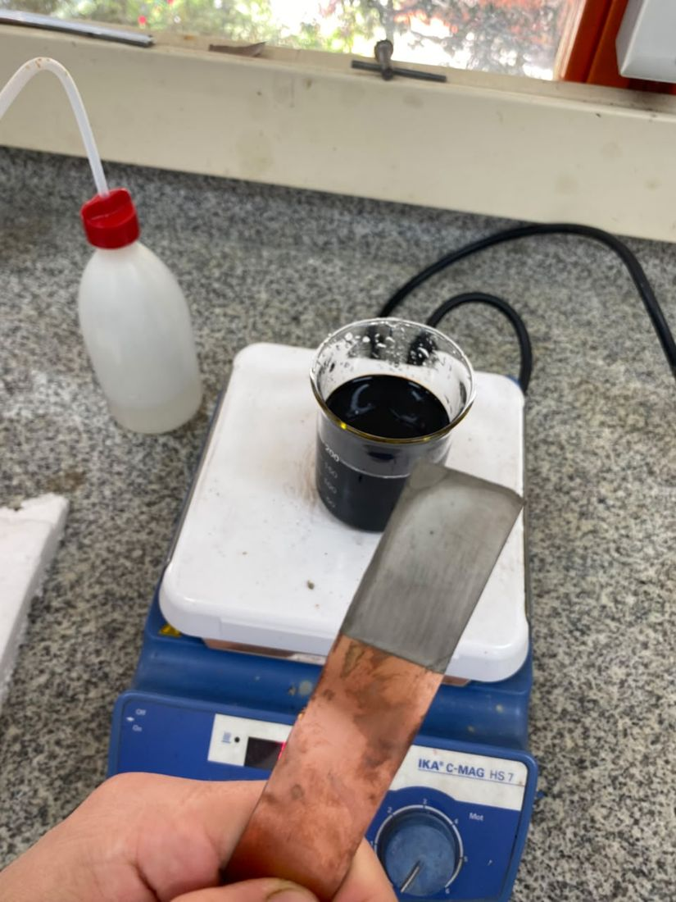
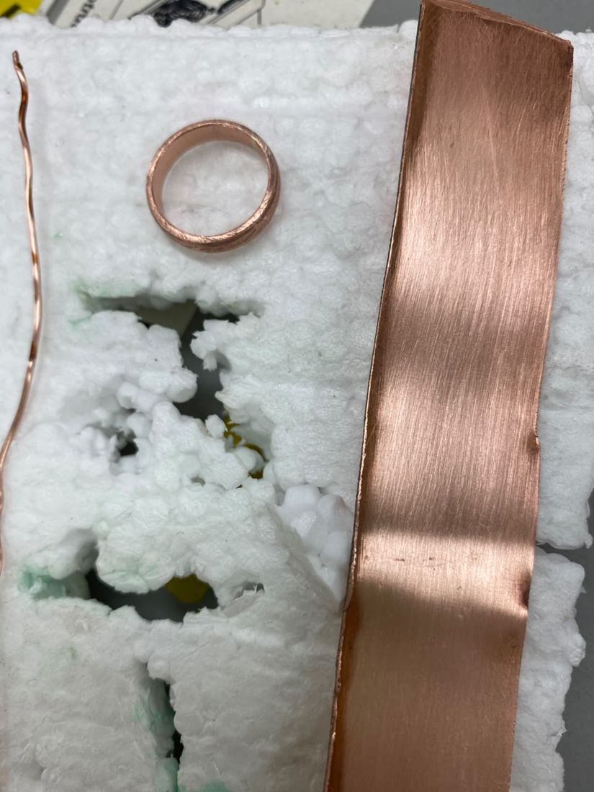
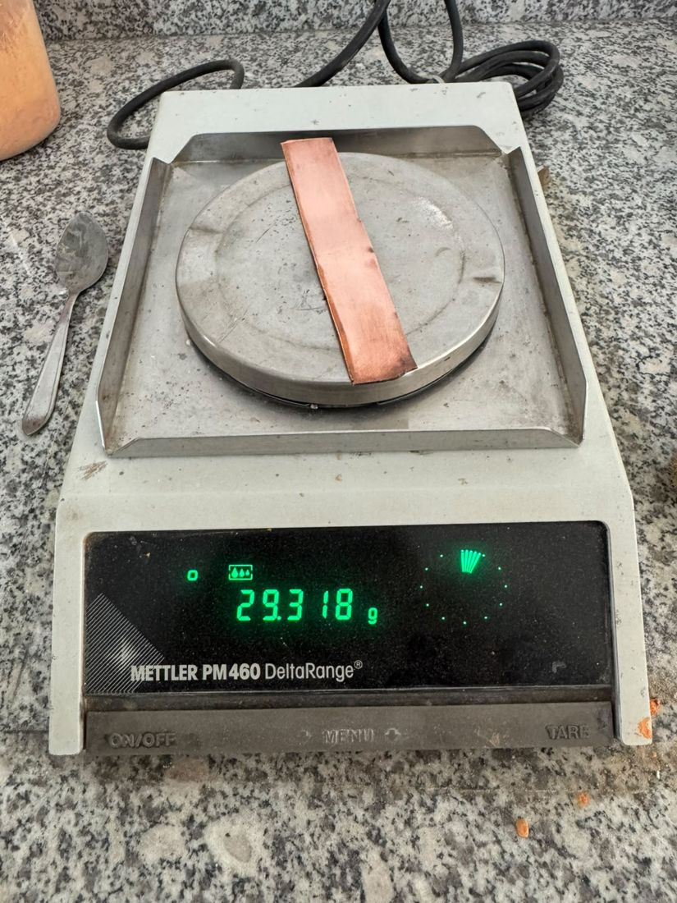
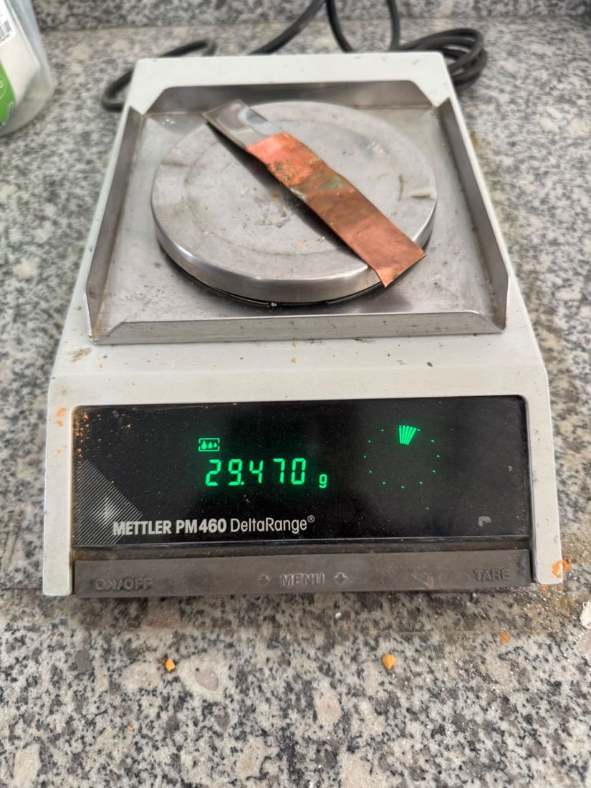
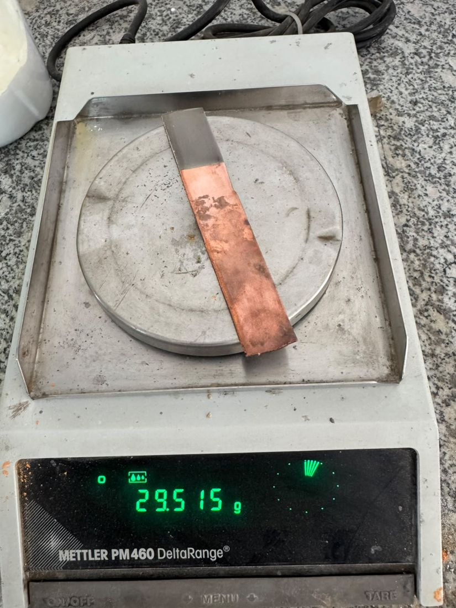
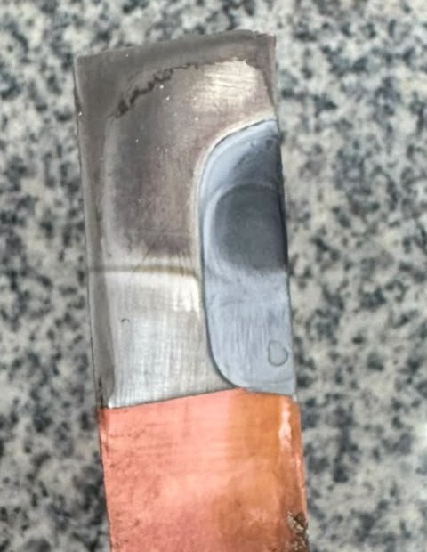
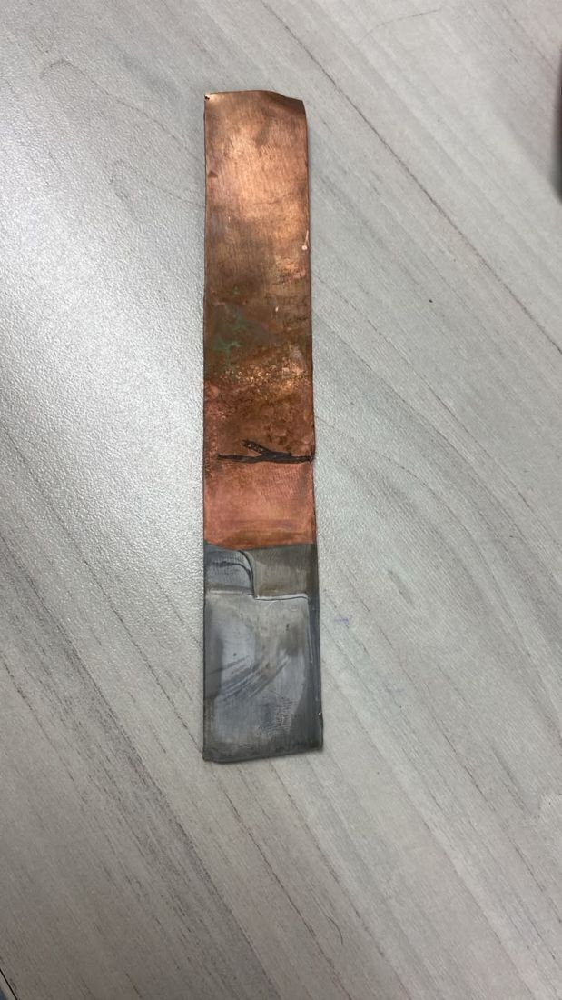
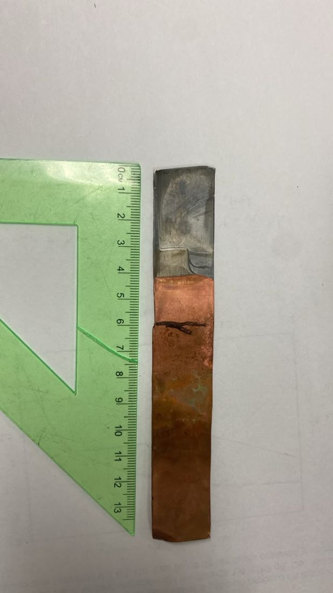
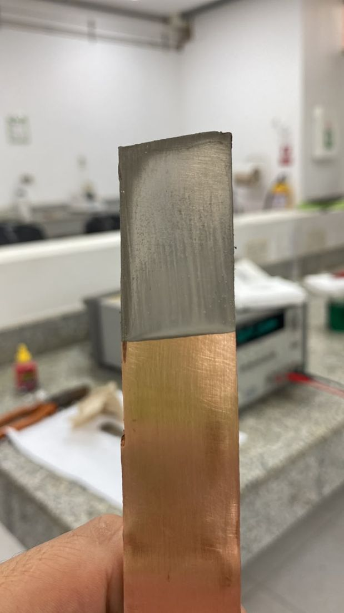

Gira el teléfono para ver la presentación
Recubrimiento Ni/Cr sobre lámina de cobre
* Modelo simplificado V = V₀ + I·R. m = M·I·t·η / (n·F); espesor = m / (ρ·A).
Masa medida en la práctica: 0,152 g.
Baño CrO₃/H₂SO₄ (100:1). Al subir la temperatura, el rango brillante se desplaza a corrientes mayores.
| Componente | Cantidad | Función |
|---|---|---|
| NiCl₂ | 50 g / 500 mL | Aporta Ni²⁺; el Cl⁻ evita la pasivación del ánodo |
| NiSO₄ | — | Fuente de Ni²⁺ |
| H₃BO₃ | 7 g / 500 mL | Regula el pH cerca del cátodo |
| Voltaje | 2 V · ≈ 0,6 A | ≈ 3 A/dm² sobre 20,1 cm² |
Ni → Ni²⁺ + 2e⁻
Ni²⁺ + 2e⁻ → Ni
Depósito obtenido: gris oscuro, mate y uniforme.
El cromo metálico se pasiva en ácido crómico. Se usa plomo, que no aporta iones; el Cr se repone desde el CrO₃ del baño.
La reducción Cr⁶⁺ → Cr⁰ requiere 6 e⁻ y la eficiencia catódica es de 10–15 %. Rango usual: 15–30 A/dm² a 45–55 °C.
H₂SO₄ en relación CrO₃ : SO₄²⁻ ≈ 100 : 1.
29,318 g
Retiro de óxido y grasa del cobre
Activación de la superficie
NiCl₂ + NiSO₄ + H₃BO₃ · 2 V, ≈ 0,6 A · ánodo de Ni
29,470 g
Preparación del níquel para el cromado
Ácido crómico · ánodo de Pb · 70 °C · agitación · 7–10 A
Por la agitación, el ánodo tocó la lámina
Residuos de Cr(VI) a disposición
29,515 g



| Parámetro | Niquelado | Cromado |
|---|---|---|
| Electrolito | NiCl₂ 100 g/L · H₃BO₃ 14 g/L | CrO₃ 250 g/L · H₂SO₄ 2,5 g/LREF |
| Ánodo | Níquel | Plomo |
| Voltaje | 2 V (≈ 0,6 A) | 4–8 VREF |
| Corriente | ≈ 0,6 A | 7–10 A |
| Densidad de corriente | ≈ 3 A/dm² | 35–50 A/dm² |
| Temperatura | 45–55 °CREF | 70 °C |
| pH | 4,0–4,5REF | < 1REF |
| Tiempo | ≈ 15 minFARADAY | ≈ 7–10 minFARADAY |
| Agitación | SuaveREF | Magnética |
| Área recubierta | 20,1 cm² | 20,1 cm² |
En negro, valores registrados en la práctica. REF: valor de referencia bibliográfica. FARADAY: tiempo estimado a partir de la masa depositada.
| Etapa | Masa (g) | Incremento (g) |
|---|---|---|
| Antes del niquelado | 29,318 | — |
| Después del niquelado | 29,470 | 0,152 |
| Después del cromado | 29,515 | 0,045 |
| Incremento total | 0,197 |



Rango típico para níquel: 5–15 µm.
Carga requerida con η = 12 %: 4 175 C. Rango típico para cromo decorativo: 0,2–1 µm.




Gris oscuro, mate y uniforme. El baño no tenía abrillantadores y se trabajó a 2 V, con unos 0,6 A.
Gris claro, sin brillo de espejo. La temperatura de 70 °C en aumento y la corriente alta favorecen depósitos opacos.
En el contacto, la corriente se concentró en un punto y calentó la zona, que quedó con otro color.
Manchas por el ataque del ácido crómico sobre el cobre sin recubrir.
J. Gabriel Franco · Deivis Orlando Jiménez · Fabián Yesid Rivera